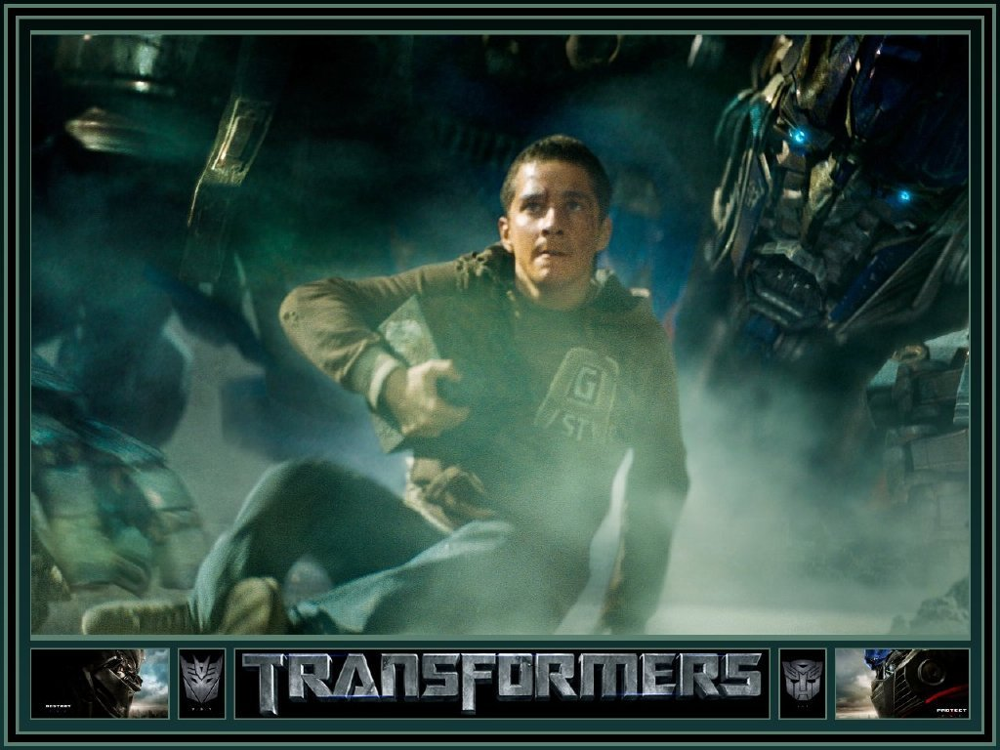

Hai, perkenalkan nama saya Aproditha Alya Chairani, saya berumur 16 Tahun. Saya lahir di Kudus, 8 November 2001. Saya adalah anak pertama dari dua bersaudara. Ayah saya bernama Imam Tusilo, beliau bekerja sebagai karyawan swasta. Sedangkan ibu saya bernama Kusrini, beliau adalah ibu rumah tangga. Saya memiliki seorang adik laki-laki yang masih kelas 1 SMP yang bernama Hafidzun Alim. Saya tinggal di Jl. Anggur Raya blok L2 No. 20 PSP Tapos-Depok. Tetapi sekarang saya kos di Jl. Ciheuleut karena jarak antara rumah dan sekolah saya cukup jauh. Saya pulang ke rumah setiap sabtu pagi dan kembali lagi ke Bogor pada Senin Pagi.
Riwayat Pendidikan
Berikut adalah daftar riwayat pendidikan saya :
1. TK : TK IT NABILA (lulus pada tahun 2006)
2. SD : SDN SUKATANI 4 (2007-2013)
3. SMP : SMPN 11 DEPOK (2013-2016)
4. SMA/SMK : SMK-SMAK BOGOR (2017-SEKARANG)
Hobi/Kegemaran

Salah satu hobi saya adalah menonton film, khususnya film action. Salah satu film action favorit saya adalah Transformers. Saya sudah mengoleksi semua film transformers. Ada 5 Film transformers dan yang terakhir berjudul ,Transformers:The Last Knight yang merupakan film terakhir dari serial Transformers. Karakter robot yang paling saya sukai adalah Optimus Prime yang merupakan pemimpin dari para Autobot(robot yang baik).
Salah satu genre film yang saya sukai selain action adalah fantasi. Salah satu film fantasi yang saya sukai adalah Harry Potter. Film ini sudah melegenda dimana-mana. Filmnya bercerita tentang kehidupan para penyihir dan ada sekolah yang dikhususkan untuk para penyihir. Ada 7 seri film harry potter, dan saya sudah mengoleksi ketujuh filmnya. Film yang terakhir berjudul The Deathly Hallows. Saking panjangnya durasi film ini, akhirnya film ini dibagi menjadi 2 part. Karakter yang paling saya suka dalam film ini adalah Harry Potter sendiri.
Salah satu hobi saya adalah mendengarkan musik. Khususnya lagu barat. Saya juga menyukai band Inggris yang bernama One Direction. Saya sudah menjadi fans mereka dari kelas 6 SD. Salah satu anggota yang paling saya sukai adalah Niall Horan dan lagu mereka yang paling saya sukai adalah yang berjudul Little Things. Saya tergabung dalam sebuah fandom yang bernama Directioners. Di fandom itu banyak sekali orang yang menyukai one direction sama seperti saya. Saya jadi memiliki banyak teman dari dalam maupun luar negeri. Saya sering kali mendengarkan lagu one direction saat waktu senggang atau saat sedang mengerjakan PR.
Sekian Perkenalan dari saya. Terima Kasih atas perhatiannya.